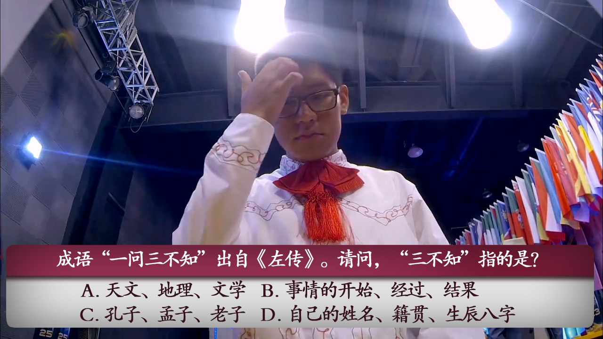
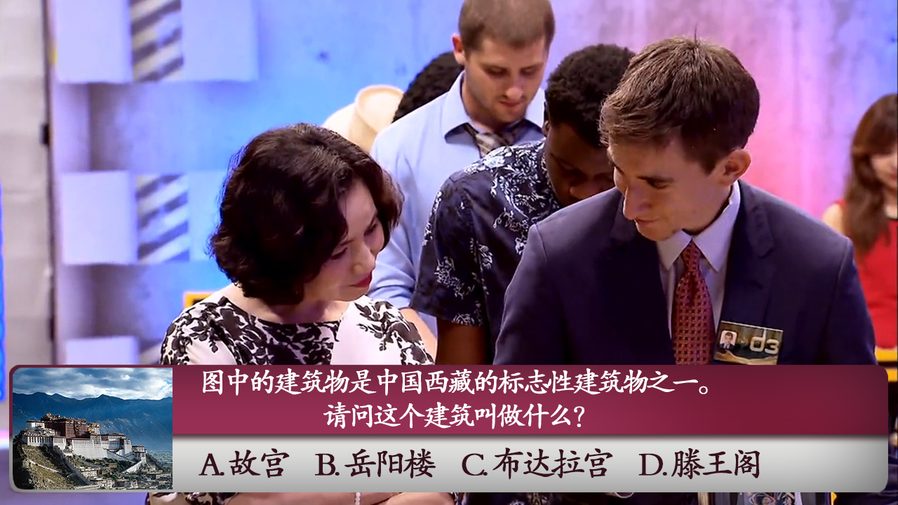
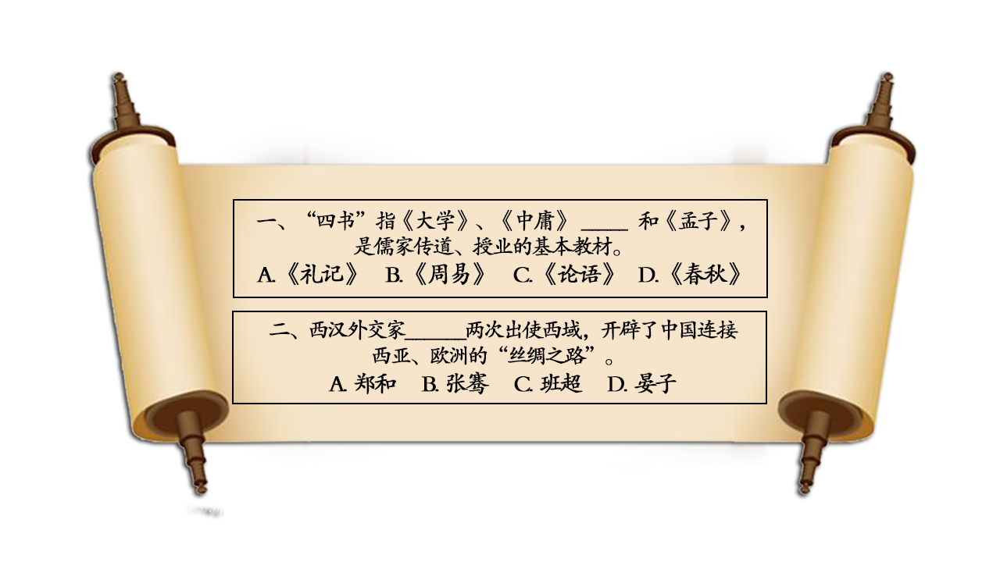

2016-10-21阅读（1,628）

【复赛】
本届汉语桥复赛中美洲组一共有六个晋级名额，进入决赛的六位人选将由机考决出，下面看一下哪几位选手能够脱颖而出最终进入决赛呢？
问题一：中国历史上哪个朝代是“以胖为美”？
A.秦朝 B.汉朝C.唐朝 D.清朝
答案：C(唐朝)
解析：唐朝其一在于，唐代繁荣昌盛、丰衣足食，正如杜甫诗句中所记“稻米流脂粟米白，公私仓廪俱丰实”，人们有条件吃饱穿暖保持健康丰满的体格。
其次，唐代开放兼容并包。国力强盛与文明发达，使唐人充满自信，成为一个高度开放的国家。据不完全统计，当时与唐交往的国家有130多个。不同文化的影响、交融，使唐人不拘于传统，眼界开阔，热烈放姿。
第三，统治者的血统也决定了唐人对健硕的体魄更易亲近。 当时崇尚的“丰肥浓丽、热烈放姿”绝不单纯是女性体态上的肥瘦，穿着上的遮露。可以说，这种审美取向是一种全方位的审美理念，所体现的是一种力量型的、开放兼容的文化视野。譬如唐人喜爱牡丹，而牡丹的花型正是高贵丰满。唐人塑造的骏马形象也都是骠满臀圆。而唐代影响最大的颜体书法更是肥硕、庄严而浑厚。
如果把视野放得更大一些，就会发现，唐都长安城是当时世界上最大的都城，马路是最宽阔的，宫殿是最高峻宏伟的，当时的中国几乎是世界向往的中心。这一切体现了一个民族进入高度成熟、处于生命力最旺盛阶段洋溢出的蓬勃朝气和高度自信。唐人崇尚并醉心的这种气魄、力量和开张的美，传递给我们的是一种扑面而来的时代气息——热烈放姿、开拓进取、积极向上。
问题二：鲁迅是中国著名的文学家、思想家，请问，以下选项中，哪一个不属于他的名字？
A.周豫才B.周树人 C.周豫山 D.周作人
答案：B（周树人）
解析：鲁迅原名周樟寿，后改名周树人，字豫山，后改豫才，“鲁迅”是他1918年发表《狂人日记》时所用的笔名，也是他影响最为广泛的笔名，浙江绍兴人。著名文学家、思想家，五四新文化运动的重要参与者，中国现代文学的奠基人。
鲁迅一生在文学创作、文学批评、思想研究、文学史研究、翻译、美术理论引进、基础科学介绍和古籍校勘与研究等多个领域具有重大贡献。他对于五四运动以后的中国社会思想文化发展具有重大影响，蜚声世界文坛，尤其在韩国、日本思想文化领域有极其重要的地位和影响，被誉为“二十世纪东亚文化地图上占最大领土的作家”。

问题三：成语“一问三不知”出自《左传》。请问，“三不知”指的是？
A.天文、地理、文学 B.事情的开始、经过、结果
B. C.孔子、孟子、老子 D.自己的姓名、籍贯、生辰八字
答案：A（天文、地理、文学）
解析：一问三不知出自《左传》，现指怎么问都说不知道。三不知，指事情的起因，经过和结果。另外，一问三不知也有装糊涂，假装不知道的意思，有明哲保身的意味。
【明星出题】
问题四：中国大陆的火警电话号码是以下电话中的哪一个？
A.120 B.119 C.114 D.110
答案：B（119）
解析：世界各国的火警号码都不一样，但每个国家都选取了让人们最容易记住的数字来组成火警号码。那么，中国大陆为什么选用“119”作为火警号码？原来，“1”在古代时候念作“幺”，它跟“要”字同音。而且“119”号码便于记忆，发生火灾时，想到“要、要、救”，以便联想到“119”拨火灾报警电话。

问题五：图中的建筑物是中国西藏的标志性建筑物之一。请问这个建筑叫做什么？
A.故宫B.岳阳楼C.布达拉宫D.滕王阁
答案：C（布达拉宫）
解析：布达拉宫位于拉萨市区西北玛布日山上，是世界上海拔最高，集宫殿、城堡和寺院于一体的宏伟建筑，也是西藏最庞大、最完整的古代宫堡建筑群。
布达拉宫依山垒砌，群楼重叠，殿宇嵯峨，气势雄伟，是藏式古建筑的杰出代表，中华民族古建筑的精华之作，是第五套人民币50元纸币背面的风景图案 。主体建筑分为白宫和红宫两部分。宫殿高200余米，外观13层，内为9层。布达拉宫前辟有布达拉宫广场，是世界上海拔最高的城市广场。
布达拉宫最初为吐蕃王朝赞普松赞干布为迎娶尺尊公主和文成公主而兴建。1645年（清顺治二年）五世达赖洛桑嘉措重建布达拉宫之后，成为历代达赖喇嘛冬宫居所，以及重大宗教和政治仪式举办地，也是供奉历世达赖喇嘛灵塔之地，旧时西藏政教合一的统治中心。
美洲组晋级选手
墨西哥赛区：丹尼尔 美国休斯敦赛区：欧林茜 加拿大蒙特利尔赛区：安德烈
阿根廷赛区：马超 美国华盛顿赛区：戴睿 美国旧金山赛区：白磊
【答题环节】
看到这，大家学到多少新知识呢？我们也来让大家测试一下，看看自己的中文水平有没有进步呢？请看下面的两道题。

答案： 第1题：C
第2题：B
【有关汉语桥】
“汉语桥”是由孔子学院总部/国家汉办举办的国际中文赛事，是世界人文交流领域的知名品牌活动 。“汉语桥”中文比赛已成为外国学生学习汉语，了解中国的重要平台，在中国与世界各国青年之间架起了一座沟通心灵的桥梁。
文章原创丨版权所有丨转发请注出处
内容制作：晁壮